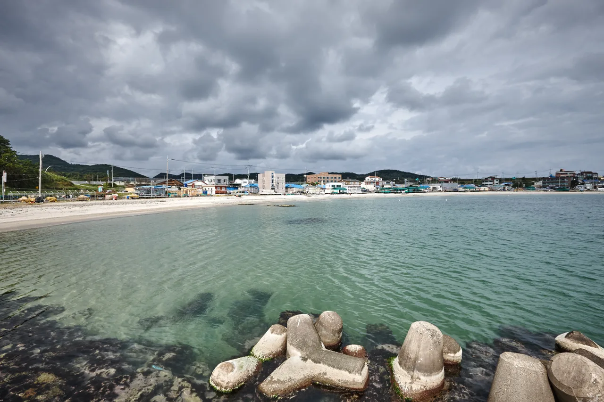
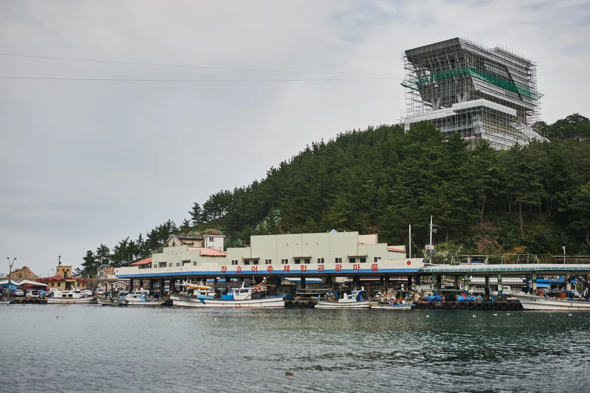
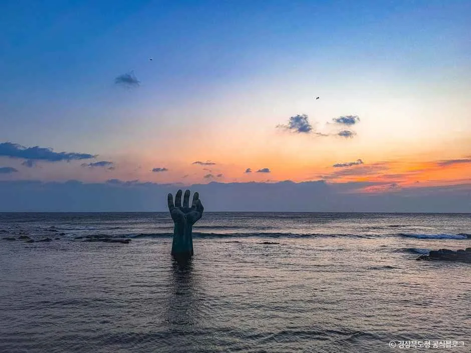

▲ 정동진 해변. 동해안은 주차 지점에서 바로 수평선이 보이는 구간이 많다 ⓒ 한국관광공사 (공공누리 제1유형)
일출 명소라고 소개된 곳 중 상당수는 걸어 올라가야 합니다. 산 정상이거나, 주차장에서 데크길을 한참 지나야 하는 전망대입니다.
차로 가는 여행에서는 기준이 다릅니다. 어두운 새벽에 짐을 챙겨 걷는 것과, 차를 세운 자리에서 그대로 보는 것은 완전히 다른 일정입니다.
1. 방향이 절반을 정합니다
해는 동쪽에서 떠서 서쪽으로 집니다. 당연한 이야기지만, 한반도의 해안선에 대입하면 코스가 자동으로 갈립니다.
| 해안 | 기본 | 특징 |
|---|---|---|
| 동해안 | 일출 | 수평선이 트여 있어 가리는 것이 없음 |
| 서해안 | 일몰 | 갯벌·섬이 겹쳐 실루엣이 만들어짐 |
| 남해안 | 일몰 | 다도해 지형으로 층이 생김 |
동해안이 일출에 유리한 이유는 지형입니다. 수평선까지 가리는 섬이 거의 없습니다. 반대로 남해안은 섬이 많아 해가 섬 사이로 지는 그림이 만들어집니다.
2. 동해안 — 주차하고 바로 보이는 구간
동해안에서는 7번 국도와 해안도로가 바다와 거의 붙어 있습니다. 갓길 전망 공간이나 해변 주차장에서 차를 세운 채로 일출을 보는 것이 가능합니다.

▲ 포항 삼정해수욕장. 포항 권역은 호미곶과 함께 대표적인 일출 구간이다 ⓒ 한국관광공사 (공공누리 제1유형)
📍 유명한 곳일수록 주차가 먼저 끝납니다
정동진과 호미곶처럼 널리 알려진 지점은 일출 30분 전이면 주차장이 찹니다. 특히 새해 첫날은 통제까지 이뤄집니다.
같은 해안선에서 한 정거장 떨어진 지점을 잡으면 태양의 위치는 거의 같으면서 주차가 훨씬 수월합니다. 일출은 명소가 아니라 방향의 문제입니다.

▲ 삼척 장호 일대. 강릉·정동진보다 한산해 주차 부담이 적다 ⓒ 한국관광공사 (공공누리 제1유형)

▲ 포항 호미곶의 '상생의 손'. 해가 이 조형물 너머로 떠오르는 구도가 널리 알려져 있다 ⓒ 경상북도 (공공누리 제1유형)
3. 시각은 계산해서 가야 합니다
일출 시각은 계절에 따라 한 시간 이상 움직입니다. "동해 일출은 몇 시"라는 고정값은 존재하지 않습니다. 같은 날짜라도 지역에 따라 다릅니다.
한국천문연구원이 지역과 날짜를 지정해 일출·일몰 시각을 계산하는 서비스를 운영합니다. 목적지와 방문 예정일을 넣으면 정확한 값이 나옵니다.
명소 목록은 기상청이 별도로 안내합니다. 해돋이와 해넘이를 나눠 정리해두었습니다.
▲ 포항 일대는 해안도로가 바다와 붙어 있어 차를 세운 자리에서 바로 수평선이 보인다 ⓒ 한국관광공사 (공공누리 제1유형)
4. 도착이 아니라 출발을 역산합니다
일출을 보러 가는 일정은 거꾸로 짜야 합니다.
| 단계 | 내용 |
|---|---|
| 1. 일출 시각 | 천문연구원 계산값 확인 |
| 2. −30분 | 하늘이 밝아지는 박명 구간 — 실제 볼거리는 여기서 시작 |
| 3. −20분 | 주차 및 자리 확보 |
| 4. − 이동시간 | 야간 주행이므로 주간보다 여유를 둘 것 |
박명 구간을 놓치면 절반을 놓칩니다. 해가 완전히 뜨기 전 하늘이 붉게 물드는 시간이 오히려 색이 진합니다. 일출 시각에 맞춰 도착하면 이미 늦습니다.
5. 일몰은 훨씬 쉽습니다
일몰은 일정 부담이 거의 없습니다. 새벽에 일어날 필요가 없고, 낮 일정을 마친 뒤 이동하면 됩니다.
남해안과 서해안이 무대입니다. 특히 남해는 섬이 겹쳐 보이는 지형이라, 해가 수평선이 아니라 산 능선 사이로 내려앉는 그림이 만들어집니다.

▲ 남해 일대의 해넘이. 다도해 지형에서는 해가 섬 사이로 내려앉는 구도가 만들어진다 ⓒ 경상남도 남해군 (공공누리 제1유형)
📍 일몰 뒤가 진짜입니다
해가 넘어간 뒤 15~30분 동안 하늘이 남색과 주황으로 갈리는 구간이 있습니다. 사진에서 가장 좋은 시간대입니다.
다만 이때 급격히 어두워집니다. 해안 주차장은 조명이 약한 곳이 많으므로, 나올 길을 미리 봐두는 편이 좋습니다.
6. 새벽·야간 해안도로에서 조심할 것
일출과 일몰 모두 어두운 시간의 해안도로 주행을 동반합니다.
| 항목 | 내용 |
|---|---|
| 가로등 | 해안 구간은 조명이 끊기는 곳이 많음 |
| 노면 | 바다 안개와 염분 습기로 미끄러울 수 있음 |
| 주차 | 갓길 정차 시 비상등과 위치 반드시 확인 |
| 보행자 | 일출 시간대에는 어두운 옷의 보행자가 도로를 건넘 |
일출 직전·직후에는 반대로 눈이 부십니다. 동쪽으로 달리는 아침, 서쪽으로 달리는 저녁에는 태양이 시야 정면으로 들어옵니다. 선바이저와 선글라스를 미리 챙기는 편이 좋습니다.
7. 정리
차에서 바로 보는 해돋이·해넘이는 방향이 절반을 정합니다. 동해안은 일출, 서해안·남해안은 일몰이 기본 구도이며, 동해안은 수평선을 가리는 지형이 없어 주차 지점에서 바로 조망되는 구간이 많습니다.
시각은 고정값이 없습니다. 한국천문연구원 일출·일몰 시각 계산에서 지역과 날짜를 지정해 확인하고, 명소는 기상청 안내를 참고하면 됩니다.
일출은 출발 시각을 역산해야 합니다. 실제 볼거리는 일출 30분 전 박명부터 시작되므로, 일출 시각에 맞춰 도착하면 늦습니다. 유명 지점은 30분 전이면 주차가 차므로, 같은 해안선의 한 정거장 옆을 잡는 편이 현실적입니다.